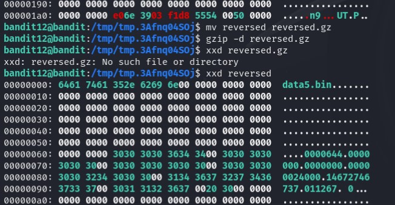

Level 10 - 14
Level 10 - Human readable strings
❓Description
The password for the next level is stored in the file data.txt in one of the few human-readable strings, preceded by several ‘=’ characters.
üìîStudy
The strings command is designed to find and print sequences of printable characters (strings) within a file, particularly useful when dealing with binary files that might contain embedded text.
üí° Solution
 We can see that data.txt contains binary matches when trying to
We can see that data.txt contains binary matches when trying to grep
Hence, we can you strings to filter out the printable char in the file
Level 11 - Base64 coded
❓Description
The password for the next level is stored in the file data.txt, which contains base64 encoded data.
üìîStudy
Since I have been constantly encountering it, let’s take this good chance to have a more comprehensive understanding of base64 Encoding
Base64 is an encoding scheme that transforms binary data ➡ printable chracters.
ü§î WHY USE IT?
- some systems are restricted to ASCII characters
- some characters having meaning that might differ from system to system
ü§î WHEN TO USE IT?
- imcompatible data is transmitted through network (eg. image attachement in emails)
- imcompatible data needs to be stored in files or cookies, etc.
Coming back to base64 command in linux üòØ
-
encoding
$ echo -n 'Hello, World!' | base64 SGVsbG8sIFdvcmxkIQ== -
decoding
$ base64 -d <<< SGVsbG8sIFdvcmxkIQo= Hello, World!
üí° Solution
Let’s look into data.txt raw content:
bandit10@bandit:~$ cat data.txt
VGhlIHBhc3N3b3JkIGlzIGR0UjE3M2ZaS2IwUlJzREZTR3NnMlJXbnBOVmozcVJyCg==
==now, use base64 command to decode this
bandit10@bandit:~$ base64 -d <<< cat data.txt
The password is dtR173fZKb0RRsDFSGsg2RWnpNVj3qRr
Level 12 - ROT13
❓Description
The password for the next level is stored in the file data.txt, where all lowercase (a-z) and uppercase (A-Z) letters have been rotated by 13 positions
üìîStudy
ROT13 is a simple letter substitution cipher that replaces a letter with the 13th letter after it in the Latin alphabet.
One of the earliest form of crytography as it is developed way back in ancient Rome ;p
üí° Solution
Level 13 - Hexdump
❓Description
The password for the next level is stored in the file data.txt, which is a hexdump of a file that has been repeatedly compressed. For this level it may be useful to create a directory under /tmp in which you can work. Use mkdir with a hard to guess directory name. Or better, use the command “mktemp -d”. Then copy the datafile using cp, and rename it using mv (read the manpages!)
üìîStudy
File signature
üìÅ is a unique dequence of bytes at the beginning of a file that identifies its format,even if the file extension is missing/incorrect
üìÅ You can find these signature at the beginning of the file
      Example
      - JEPG file: FF D8 FF E0
      - PDF file: 25 50 44 46
      - Windows exec file: 4D 5A
üìÅWe can analyse file signature by comparing the digital signatures of files against a database of known malicious signatures to identify and flag potentially harmful or suspicious files.
Why is file signature important
- for computer to determine the correct application to open a file
- ensure data integrity from corruption or tampering
- use to identify and prevent malware
HexDumps
üî¢is a textual representation of computar data (typically binary), in hexdecimal format
üî¢How to read
00000000 48 65 6c 6c 6f 20 77 6f 72 6c 64 21 Hello world!00000000is the hexadecimal address.48 65 6c 6c 6f 20 77 6f 72 6c 64 21are the hexadecimal values of the bytes.Hello world!is the ASCII representation of the bytes.
üî¢xxd command
- used for creating and analyzing hexadecimal dumps from files
- example
xxd hello.txt > hexdump.txt: converting hello.txt into hexdump and store in hexdump.txtxxd -r hexdump.txt > reversed.txt: reverse back
üí° Solution
This is a hard level üíÄ Let’s break down into steps for easier intepretation.
STEP 1: MAKE TEMP DIR
As advised I create a temporary directory to store the files in the process of solving, using mktemp
Then copy cp data.txt from home directory and rename it mv for easier refence
STEP 2: GZIP FILE
First inspect the hexdump file, we can idenitfy the file signature 1f8b
By looking up the list of file signature, we can recognize that the file is a gzip file, what we have to do is decompress it.
In order to decompress, we first have to reverse hexdump.txt and rename the right extension to reverse
bandit12@bandit:/tmp/tmp.3Afnq04SOj$ xxd -r hexdump.txt reversed
bandit12@bandit:/tmp/tmp.3Afnq04SOj$ ls
hexdump.txt reversed
bandit12@bandit:/tmp/tmp.3Afnq04SOj$ mv reversed reversed.gz # rename with right extensionBy decompressing reversed.gz using gzip -d we get
Let’s hexdump view of our decompressed file, we get 425a file signature, by checking up

STEP 3: BZIP2 FILE
Follow the same procedure~
✅ rename to right extension: mv reversed reversed.bz2
✅ decompres: bzip2 -d reversed.bz2
✅ inspect the new file: cat
✅ check for file signature: xxd reversed

hmm… seems like another gzip file
STEP 4: ANOTHER GZIP FILE
same process, we get

we can see data5.bin appearing, and 6461 seems to not be in the list…
Maybe I can try using file command to inspect
STEP 5: TAR ARCHIVE
Got it, the reversed file is a tar achieve object
By decompressing it with tar -xvf reversed, we see data5.bin being extracted out
Repeat it with data5.bin comes out data6.bin (it’s a rabit hole legitüò£)
STEP 6: ANOTHER TAR ARCHIVE
By checking the content of data6.bin, still doesn’t look right (haih)

So, continue extracting data6.bin (out of words)
 Discovering data8.bin (yay)
Discovering data8.bin (yay)
STEP 6: LAST GZIP FILE
Using file command we know data8 is gzip, just decompress

üëèüèºüëèüèºüëèüèºGET
Level 14 - COPY PRIVATE KEY TO LOCAL
❓Description
The password for the next level is stored in /etc/bandit_pass/bandit14 and can only be read by user bandit14. For this level, you don’t get the next password, but you get a private SSH key that can be used to log into the next level. Note: localhost is a hostname that refers to the machine you are working on
üìîStudy
If we want to transfer files from remote host to local host, how do we do? ü§î
Ans: scp command
Secure Copy (scp)
- used for securely transferring files between a local and remote system, or between two remote systems, using SSH for encryption and authentication
Syntax:
scp [options] [[user@]src_host:]file1 [[user@]dest_host:]file2[options]: flags to customize the command[user@]src_host:: Specifies the source host (IP address or domain name) and optionally the username for authentication.file1: The file or directory to be copied from the source.[[user@]dest_host:]file2: Specifies the destination host and optionally the username for authentication, and the destination path or filename.
Flags:
üö©-r: Recursively copies entire directories and their contents.
üö©-P <port>: Specifies the port number to use for the SSH connection.
üö©-i <identity_file>: Uses a specific private key file for authentication instead of the default SSH key.
üö©-p: Preserves modification times, access times, and ownership.
üí° Solution
Basically in the description we know the key to log into next level is using private SSH key, unlike other levels’ password authentication approach.
Now transfer the sshkey.private from the remote server to our local machine:
$ scp -P 2220 bandit13@bandit.labs.overthewire.org:sshkey.private .
This is a OverTheWire game server. More information on http://www.overthewire.org/wargames
bandit13@bandit.labs.overthewire.org's password:
sshkey.private Now the file is in my local file system

Now I tried logging in the next level using the copied private key file, but getting below error
Permissions are too open, as said. Now I have to reduce the permissions with chmod command:

With chmod 700, I basically limit read write execute permission to only for owner
Now use ssh with -i option to log in
$ ssh -i sshkey.private bandit14@bandit.labs.overthewire.org -p 2220